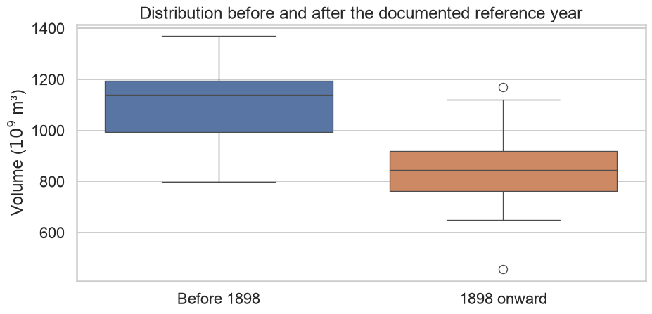

fig, ax = plt.subplots()ax.plot(tourism_missing["ds"], tourism_missing["y"], color=COLORS["observed"], marker="o")for date in missing_dates: ax.axvline(date, color=COLORS["missing"], alpha=.35)ax.set(title="Missing observations should appear as gaps", xlabel="Quarter", ylabel="Number of trips")plt.tight_layout(); plt.show()
plot_data = nile.assign( period=np.where(nile["year"] <1898, "Before 1898", "1898 onward"))fig, ax = plt.subplots()sns.boxplot(data=plot_data, x="period", y="volume", hue="period", legend=False, ax=ax)ax.set(title="Distribution before and after the documented reference year", xlabel="", ylabel=r"Volume ($10^9$ m³)")fig.tight_layout()plt.show()

Stable mean as an intercept-only model
\[
y_t=\beta_0+u_t.
\]
# Stable intercept-only reference model used for parameter-stability tests.X_level = np.ones((len(nile), 1))level_model = sm.OLS(nile["volume"], X_level).fit()level_model.summary().tables[1]
coef
std err
t
P>|t|
[0.025
0.975]
const
919.3500
16.923
54.326
0.000
885.772
952.928
This model asks whether one mean level describes the entire sample.
investigate whether flags form isolated points or clusters;
replace only one selected candidate by interpolation;
compare trend and remainder before and after;
create an audit table;
explain why the chosen treatment is defensible;
state what evidence remains unavailable.
Missingness experiment
Create three versions of the series:
one isolated missing quarter;
four consecutive missing quarters;
one missing seasonal peak every year.
For each version:
visualize the pattern of missingness;
compare linear, forward-fill, and seasonal-lag imputation;
explain which strategy is least implausible;
identify possible forecast bias.
Assessment rubric
Dimension
Evidence
Temporal reasoning
seasonality and trend are removed before flagging
Visualization
candidates, gaps, and replacements are visible
Context
error, event, zero, and missing are distinguished
Method
detection and replacement procedures are explicit
Sensitivity
alternative thresholds or imputations are compared
Transparency
original values and audit flags are retained
Interpretation
cleaning consequences are assessed, not hidden
Key Takeaways
Main conclusions
An outlier can be an error or a genuine event.
Time-series outliers should be judged relative to temporal structure.
Robust STL can isolate unusual values in the remainder.
IQR fences produce candidates, not confirmed errors.
Missing values and zeros are not interchangeable.
Missingness mechanisms can affect forecast bias.
Interpolation is an assumption-based estimate.
Different imputations can produce different stories.
Cleaning can alter trends, seasonality, remainders, and forecasts.
Every modification should remain visible and auditable.
Final checklist
References
Core reference
Hyndman, R. J., Athanasopoulos, G., Garza, A., Challu, C., & Mergenthaler, M. Forecasting: Principles and Practice, the Pythonic Way, Section 13.7, “Dealing with outliers and missing values”.
Tukey, J. W. Exploratory Data Analysis. Addison-Wesley, 1977.
Cleveland, R. B., Cleveland, W. S., McRae, J. E., & Terpenning, I. STL: A Seasonal-Trend Decomposition Procedure Based on Loess. 1990.
pandas documentation: interpolation and missing-data handling.